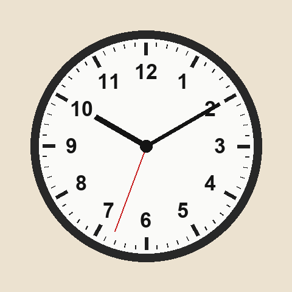
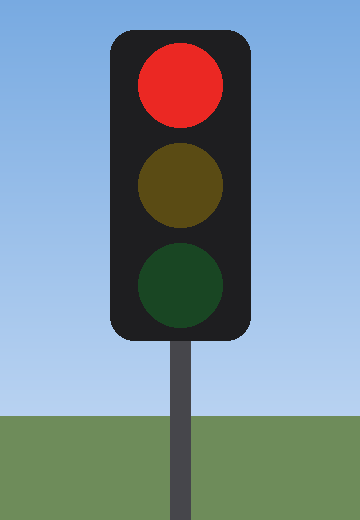
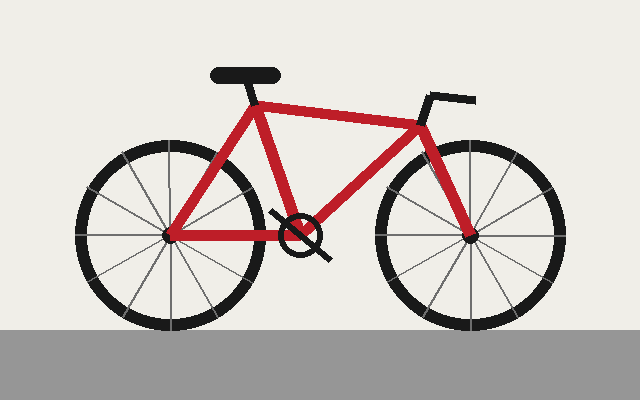
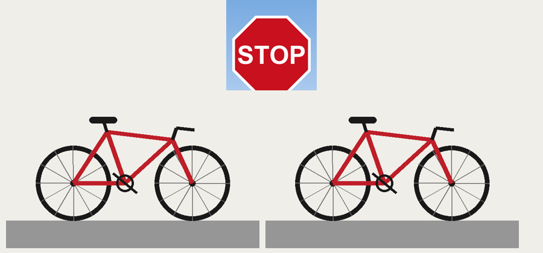
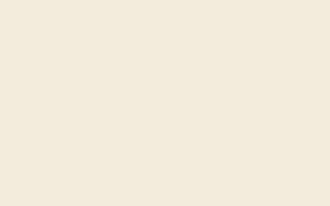

Halaman Uji PF-05 — Deteksi Objek Lokal
Semua gambar di halaman ini digambar dengan kode (examples/buat_gambar_pf05.py), bukan
unduhan. Tidak ada gambar yang memakai alt, supaya semuanya muncul di panel NaraVisi.
Tekan Alt+Shift+K. Panel seharusnya menampilkan 6 gambar. Pilih dengan panah, tekan Enter. Bila AI butuh lebih dari 1 detik, NaraVisi lebih dulu membacakan "Kemungkinan berisi: …", lalu deskripsi lengkap AI menyusul.
| No. | Gambar | Kilat yang diharapkan (diukur dengan detektor asli) |
|---|---|---|
| 1 | Rambu STOP | Kemungkinan berisi: 1 rambu berhenti. |
| 2 | Jam dinding | Kemungkinan berisi: 1 jam. |
| 3 | Lampu lalu lintas | Kemungkinan berisi: 1 lampu lalu lintas. |
| 4 | Sepeda | Kemungkinan berisi: 1 sepeda. |
| 5 | Parkir sepeda | Kemungkinan berisi: 2 sepeda, 1 rambu berhenti. |
| 6 | Bidang krem polos | Tanpa kilat. Dilewati oleh Mode Baca Berurutan; bila dipilih manual dengan Enter, tetap dikirim ke AI. |
Gambar buatan tidak selalu dikenali seperti foto asli. Bila hasil berbeda sedikit (mis. skor di
bawah 0,5), itu wajar; catat di docs/PENGUJIAN.md.





Uji cadangan (tanpa AI)
Matikan ai-service (tutup jendelanya), pilih gambar 1–5, tekan Enter. Yang diharapkan: "Deskripsi sederhana (tanpa AI): …". Sisa kuota tidak berkurang dan tidak muncul di Riwayat.
Uji pengaturan
Buka Pengaturan NaraVisi, matikan Deskripsi kilat tanpa AI, lalu ulangi. Yang diharapkan: tidak ada kalimat "Kemungkinan berisi", dan bila AI mati hanya pesan galat biasa.